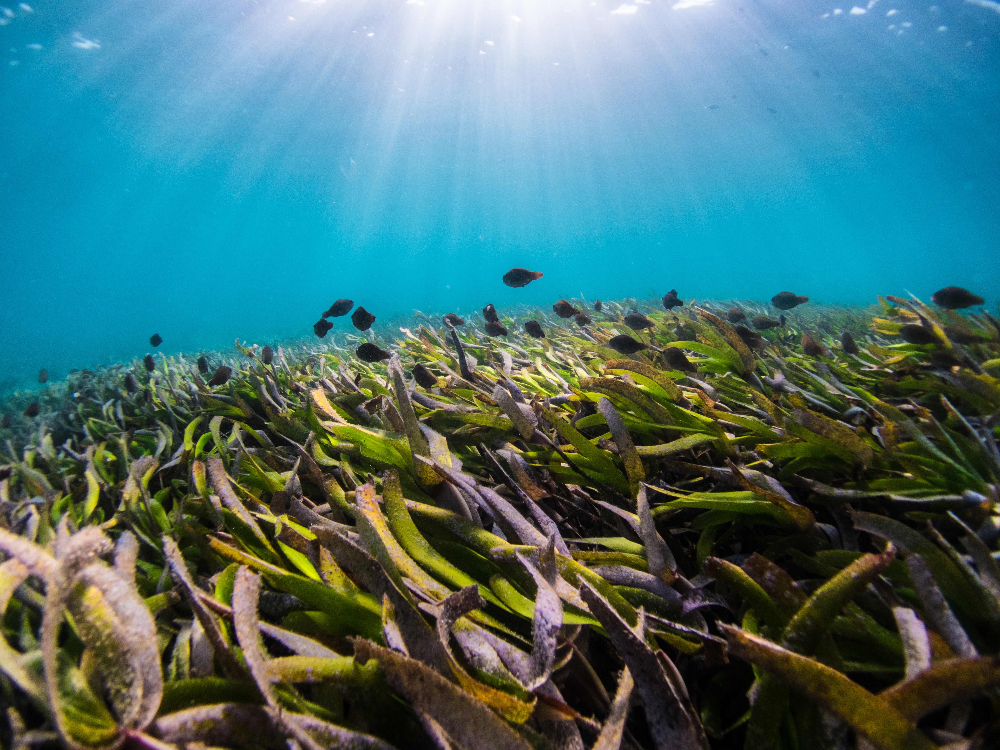

Ocean Acidification in Coastal Systems
Kelps, Seagrasses, Mussels, Oysters & Rhodoliths

Seagrasses as Modulators of Ocean Acidification
Seagrass beds are critical nursery habitats with the capacity to locally alter seawater carbonate chemistry.

How Ocean Acidification Affects Habitat-Forming Macrophytes
How do warming and changing ocean chemistry effect habitat-forming primary producers? And, in turn, how might they ameliorate the impacts of increase carbon dioxide levels through photosynthesis?
Publications & Chapters: Ocean Acidification
Ricart, A., Gaylord, B., Hill, T., Sigwart, J., Shukla, P., Ward, M., Sanford, E. 2021. Seagrass-driven changes in carbonate chemistry enhance oyster shell growth. Oecologia. doi.org/10.1007/s00442-021-04949-0.
Ricart, A., Ward, M., Hill, T., Sanford, E., Kroeker, K., Takeshita, Y., Merolla, S., Shukla, P., Ninokawa, A., Elsmore, K., Gaylord, B. 2021. Coast-wide evidence of low pH amelioration by seagrass ecosystems. Global Change Biology. doi.org/10.1111/gcb.15594.
Barclay, K.M., Gaylord, B., Jellison, B.M., Shukla, P., Sanford, E., Leighton, L. R. 2019. Variation in the effects of ocean acidification on shell growth and strength in two intertidal gastropods. Marine Ecology Progress Series. doi.org/10.3354/meps13056.
Gaylord, B., Rivest, E., Hill, T., Sanford, E., Shukla, P., Ninokawa, A., Ng, G. 2018. California Mussels as Bio-Indicators fo Ocean Acidification.. California's Fourth Climate Change Assessment. Report.
Cavalcanti, G.S., Shukla, P., Morris, M., Ribeiro, B., Foley, M., Doane, M. P., Thompson, C. C., Edwards, M.S., Dinsdale, E. A., Thompson, F. L. 2018. Rhodoliths holobionts in a changing ocean: host-microbes interactions mediate coralline algae resilience under ocean acidification. BMC Genomics. doi.org/10.1186/s12864-018-5064-4.
Shukla, P. Edwards, M.S. 2017. Elevated pCO2 is less detrimental than increased temperature to early development of the giant kelp, Macrocystis pyrifera (Phaeophyceae, Laminariales). Phycologia. doi.org/10.2216/16-120.1.